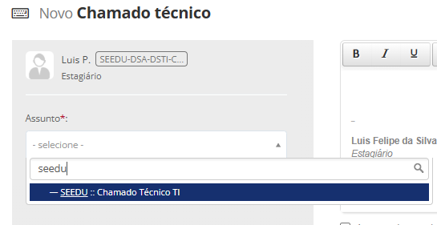
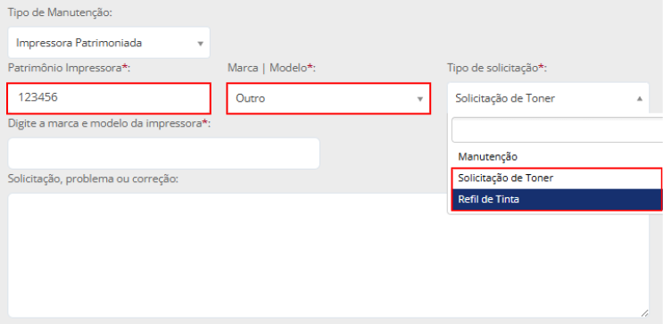
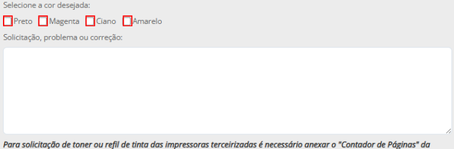
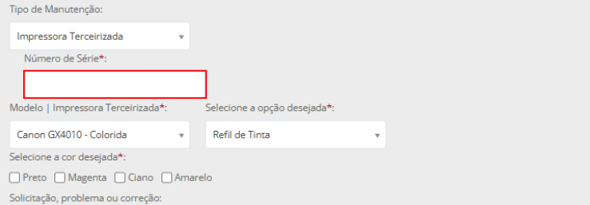

Tutorial
1Doc: Refil de Toner e Tinta
Solicite recarga ou reposição de insumos com os dados corretos.
1
Abrir o chamado
Use Novo → Chamado técnico.


2
Informar unidade e insumo
Preencha escola ou setor, tipo de suprimento, marca e modelo.



3
Número de série e envio
Para equipamentos terceirizados use o número de série da etiqueta e depois conclua o chamado.

